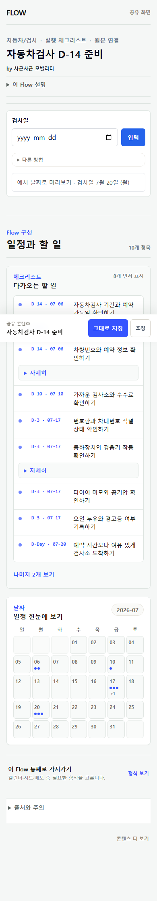
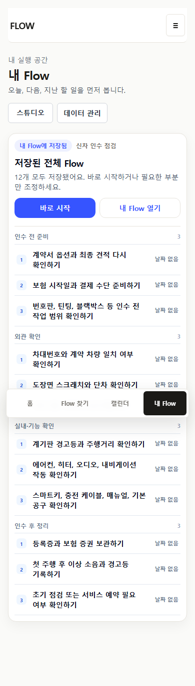
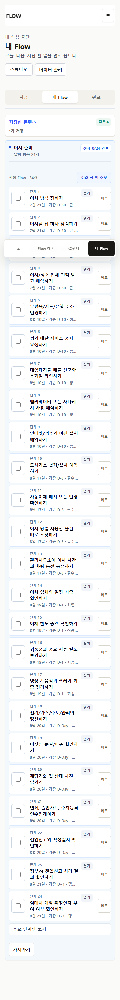
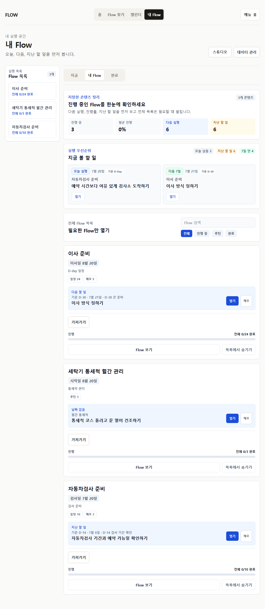
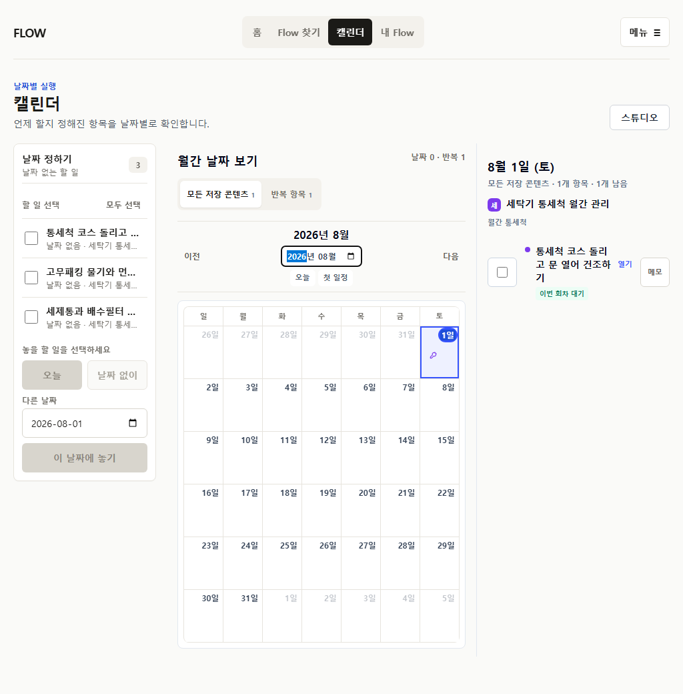
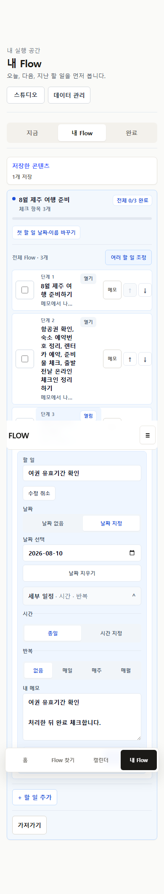
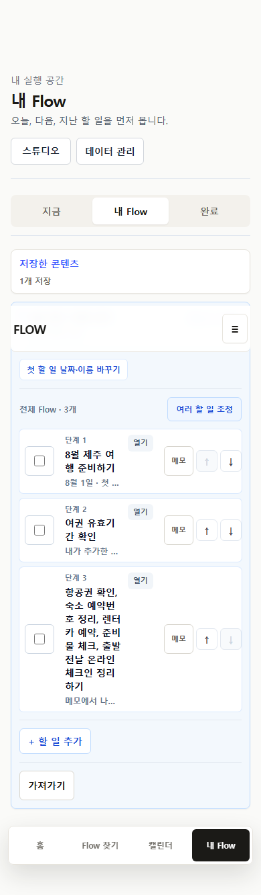
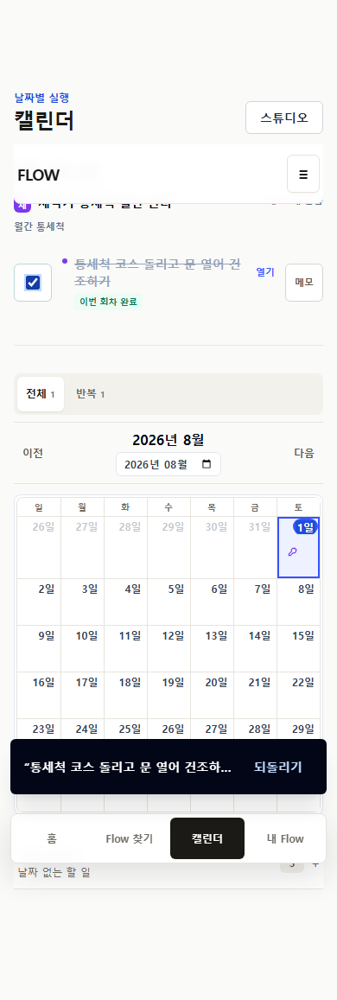
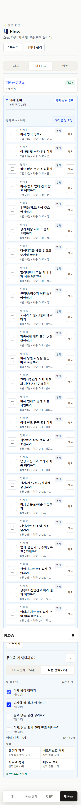

B-01. 예시 날짜가 실제 실행 날짜로 저장된다
빈 date input에서 preview label은 예시라고 말하지만 저장 후 10개 dated item과 Calendar events가 생성된다.
Independent production simulation · 2026-07-20
P25의 완료 기록을 전제로 삼지 않고 production을 다시 조작했다. 기능은 상당 부분 존재하지만 날짜 의도, 반복 회차, 메모 분할, 저장 handoff가 아직 하나의 예측 가능한 실행 계약으로 이어지지 않는다.
Evidence boundary
Production interaction, current source, current screenshots, official reference patterns를 분리했다. 자동화는 실제 사용자의 이해나 선호를 증명하지 않는다.
origin/main 192a60a, clean detached worktreePrioritized findings
각 finding은 route, viewport, 재현, 기대/실제, 영향, evidenceKind를 포함한다.
빈 date input에서 preview label은 예시라고 말하지만 저장 후 10개 dated item과 Calendar events가 생성된다.
Public는 RRULE 1개, My Flow는 Calendar 0개, Calendar는 undated definition 3개와 occurrence 1개를 함께 보여준다.
부분적으로 명확한 comma list라도 모든 절이 action regex를 통과하지 않으면 list 전체를 분할하지 않는다.
페이지 전용 CTA가 /my로 이동한다. 다른 public CTA의 ?savedFlow receipt와 다르며 전체 anchor edit도 없다.
24개 row마다 checkbox, 열기, 메모가 반복되고 phase 구조는 후순위다.
간단한 수정과 time/duration/repeat가 한 inline form에 누적된다. Wide detail pane은 더 안정적이다.
명시적으로 선택하면 tray schedule/remove와 export count가 잘 작동하지만 primary path에서는 발견하기 어렵다.
Flow 전체·직접 선택 panel은 count가 명확하지만 현재 항목은 detail 도구에 따로 있다.
Page와 subtab이 모두 `내 Flow`이고 Calendar는 global nav라 실행 queue, plan inventory, date placement의 경계가 약하다.
색과 initials는 있지만 제목이 짧게 잘려, 어느 Flow의 어떤 item인지 selected-day agenda를 열어야 확정할 수 있다.
신차 인수 12개 list보다 보류 기준 bullet과 memo가 먼저 큰 영역을 차지한다. 내용은 유지하되 위치와 밀도를 바꿔야 한다.
기능 부재는 아니나 완료 직후 item이 surface를 이동한다. Main simulation locator는 이동 중 timeout했고 isolated targeted run은 통과했다.
`내 Flow에 저장`, `그대로 저장`, `조정`, `내 버전으로 조정`이 destination까지 다르게 동작한다.
Rail과 detail pane은 존재하지만 선택 전에는 summary, priority, inventory, Flow cards가 세로로 길게 이어진다.
Journey scorecard
`supported / hidden / partial / missing / blocked`만 사용했다. 세부 수치와 screenshot path는 journey-scorecard.json에 있다.
| Journey | Overall | Supported | Hidden / Partial | Missing / Blocked |
|---|---|---|---|---|
| A. 이사 준비 24 items | partial | preview, item date, complete, whole/selected export | post-save receipt hidden, reopen movement | anchor change, new-anchor reuse |
| B. 날짜 없는 차량 점검 10 items | partial | explicit undated, tray schedule/remove, checklist | undated intent hidden, ICS eligibility contextual | blank save semantics blocked |
| C. 반복 루틴 3 definitions | partial | public RRULE, occurrence complete/reopen | series/occurrence separation | My Flow calendar export |
| D. 개인 메모 2 generated + 1 added | partial | intake, structural edit, Calendar, four outputs | split quality, advanced edit discoverability | - |
| E. 다중 Flow 3 flows | partial | inventory, tabs, whole Flow, selected export | role IA, same-day comparison, reopen focus | - |
| F. Public 첫 방문 12 items | partial | artifact count, save unit, receipt match | safety hierarchy, export prediction | - |
Screen diagnosis
| 화면 | Keep | Change | Remove | Defer |
|---|---|---|---|---|
| Public save-before | 실제 item, source, count | explicit date intent, one CTA | duplicate route CTA | social metrics |
| 저장 직후 | whole Flow count/outline | decision hub | receipt bypass | notification prompt |
| 전체 Flow | completion/progress/source | phase outline, compact rows | row마다 memo text button | kanban/Gantt |
| My Flow | 지금/완료, multi-flow rail | Flow 목록 label, selected workspace | page/tab label 중복 | team workspace |
| Calendar | wide 3-pane, reversible date | inbox semantics, Flow grouping | series definition in tray | week grid, external sync |
| Item editor | title/date/memo/schedule | quick vs advanced, mobile sheet | inline full form | NL scheduler |
| Batch edit | select/date/export/remove/undo | explicit edit mode | normal mode reorder/delete | AI rewrite |
| Completion/reopen | reversible state/identity | stable undo and focus | generic occurrence label | streaks |
| Export | scope counts, 4 formats | whole/selected/item + receipt | route adapters | direct APIs |
Current vs proposed
제안은 visual reskin이 아니라 화면별 interaction contract다. 실제 production capture와 제안 mockup을 나란히 비교한다.
첫 시선은 저장될 artifact와 날짜 의도다. 설명과 source detail은 그 다음이다.

성공 문구보다 저장된 artifact count와 다음 결정이 먼저다.

계획 phase를 먼저 읽고, 실행 row는 필요할 때 펼친다.

All overview와 selected workspace를 분리한다. `내 Flow` tab은 `Flow 목록`으로 바꾼다.

왼쪽은 진짜 unscheduled execution item만, 가운데는 date density, 오른쪽은 Flow-grouped agenda다.

Quick edit는 3필드, advanced는 명시적으로 한 단계 더 들어간다.

실행 row에 항상 구조 control을 두지 않고 `구성 편집` mode에서만 선택·순서·삭제·복구를 노출한다.

일반 item과 recurrence occurrence의 scope를 label에 포함하고 완료 직후 undo를 같은 위치에 둔다.

범위, 형식, 결과 수를 순서대로 고르고 실제 output receipt까지 확인한다.

Official reference patterns
현재 공식 도움말과 제품 자료만 사용했다. FlowMe에 적용, 변형 필요, 적용 금지를 구분했다.
| 제품 | 공식 패턴 | 판단 | FlowMe 적용 |
|---|---|---|---|
| Google Calendar | 날짜 있는 task만 Calendar 표시, pending/repeating 관리 | 적용 | Calendar eligibility와 occurrence 규칙 |
| Apple Reminders | Today/Scheduled/All/Completed | 변형 | 지금/Flow 목록/완료 + source phase |
| Fantastical | calendar/task views, compact/full windows, keyboard | 변형 | wide workspace와 compact action만 참고 |
| Things | Inbox/Today/Upcoming/Anytime/Someday, repeat template | 적용 | undated inbox, template/run separation |
| Todoist | recurring completion, next occurrence, undo | 적용 | occurrence complete/reopen |
| TickTick | only this recurrence vs repeat rule | 적용 | 이번 회차/이후/전체 scope |
| Microsoft To Do | My Day projection keeps original list identity | 적용 | 지금 view가 source Flow를 이동하지 않음 |
| Structured | undated Inbox ↔ Timeline | 적용 | tray schedule/remove reversible |
| Sunsama | backlog → day → optional timebox | 변형 | batch preview만, guided planner는 금지 |
| Notion Calendar | date property item만 Calendar 표시 | 적용 | data eligibility와 UI count 일치 |
| Nike Training Club | program phase와 실제 workout 실행 분리 | 변형 | series definition/occurrence 구분만 참고, coaching UI는 금지 |
| TripIt | import receipt, itinerary review, manual/unfiled path | 적용 | save receipt, candidate/unresolved separation |
System decisions
P26 full program
각 항목의 데이터 영향, 구현/비범위, 390/1024, 접근성, unit/E2E, acceptance는 p26-backlog.md에 모두 기록했다. 아래는 전체 실행 순서다.
P26-01 선행. 02/03/04 병렬, 05 통합 gate.
example preview와 saved schedule을 분리한다.
모든 public/source-backed save handoff를 통일한다.
routine definition, occurrence, completion, ICS를 통일한다.
source-linked split/merge review를 만든다.
effective item set과 stable identity를 고정한다.
Public artifact에서 My Flow 전체 구조까지 같은 reading order.
artifact → schedule intent → action 순서.
시작/전체/Calendar/export를 receipt에서 연결.
지금 / Flow 목록 / 완료 역할 고정.
phase outline과 compact execution row.
간단한 실행과 구조·고급 편집을 분리한다.
Mobile sheet, wide detail pane.
Add/delete/restore/reorder를 explicit mode로.
동일 identity와 안정적 focus.
기존 run을 보존한 독립 실행 사본.
Undated inbox, same-day grouping, scope/result contract.
10 → 9 → 10 reversible date placement.
Grid density와 Flow-grouped agenda.
Flow/selected/item와 actual rows/events 일치.
Interaction contract 확정 후 component와 layout을 통일한다.
Action taxonomy, tokens, states, copy budget.
390 sheet/single column, 1024 rail/outline/detail.
Automation limitation을 숨기지 않는 production closeout.
state/count/identity/export/a11y/screenshots를 deterministic하게 기록.
deployed SHA, Blocking/High 0, P27 handoff.
/goal은 p26-goal-prompts.md에 있다.P26 final review
{kind=link}
{kind=link}
{kind=link}
{kind=link}
{kind=link}
{kind=link}
{kind=link}
{kind=link}
{kind=link}
{kind=link}
{kind=link}
{kind=link}